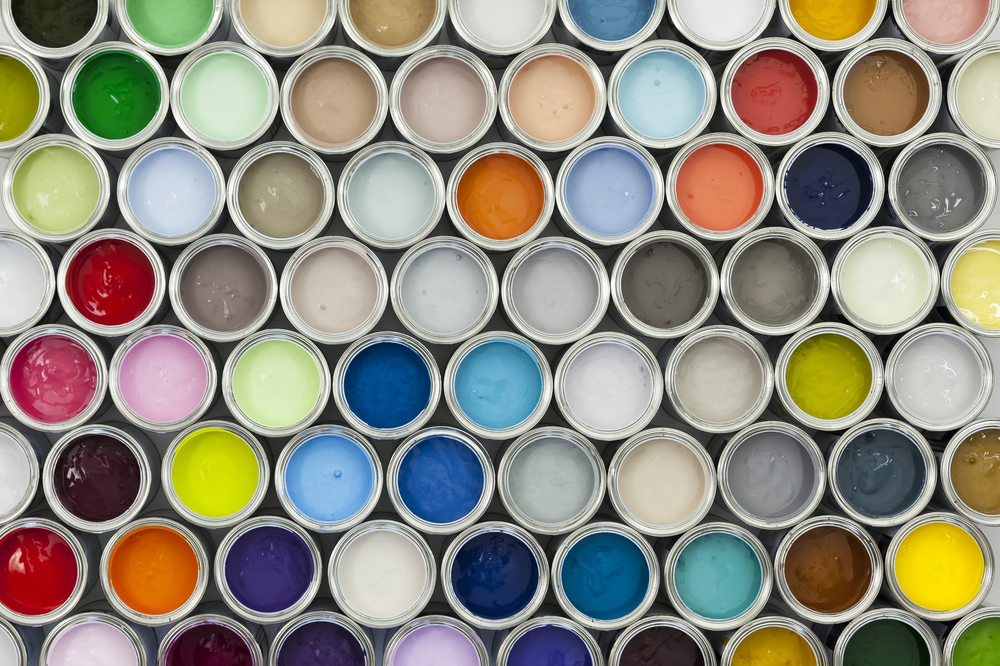

Navigation
Paint Types | How to Video | Tableau |Home | Resume | Photography

Types of Paint
- Acrylic
- Acrylic paint is a fast-drying paint made with a synthetic polymer binder. It is known for its versatility and ability to mimic the appearance of oil paints, making it a popular choice for artists working in various styles and techniques. It is also water-soluble, which means it can be thinned with water and easily cleaned up with soap and water.
- Tempera
- Tempera paint is a fast-drying paint made with pigments mixed with a water-soluble binder, such as egg yolk or casein. It has a matte finish and is known for its ability to create bright, flat areas of color.
- Gouache
- Gouache paint is an opaque watercolor with a higher pigment load and a matte finish. It is often used for illustrations, design work, and more traditionally acceptable art applications.
- Oil
- Oil paint is a slow-drying paint made with pigments suspended in a medium of drying oil, such as linseed or poppyseed oil. It is known for its ability to create rich, luminous colors and its versatility in various art styles and techniques.
- Spray
- Spray paint is a type of paint that is applied to a surface using a can fitted with a spray nozzle. It is known for its quick drying and even application, making it a popular choice for murals, graffiti, and other types of street art.
- Water Color
- Watercolor paint is a transparent paint made with pigments suspended in a medium of water and a binder, such as gum arabic. It is known for its delicate, luminous quality and ability to create subtle gradations of color.
How to Video: Acrylic
Tableau